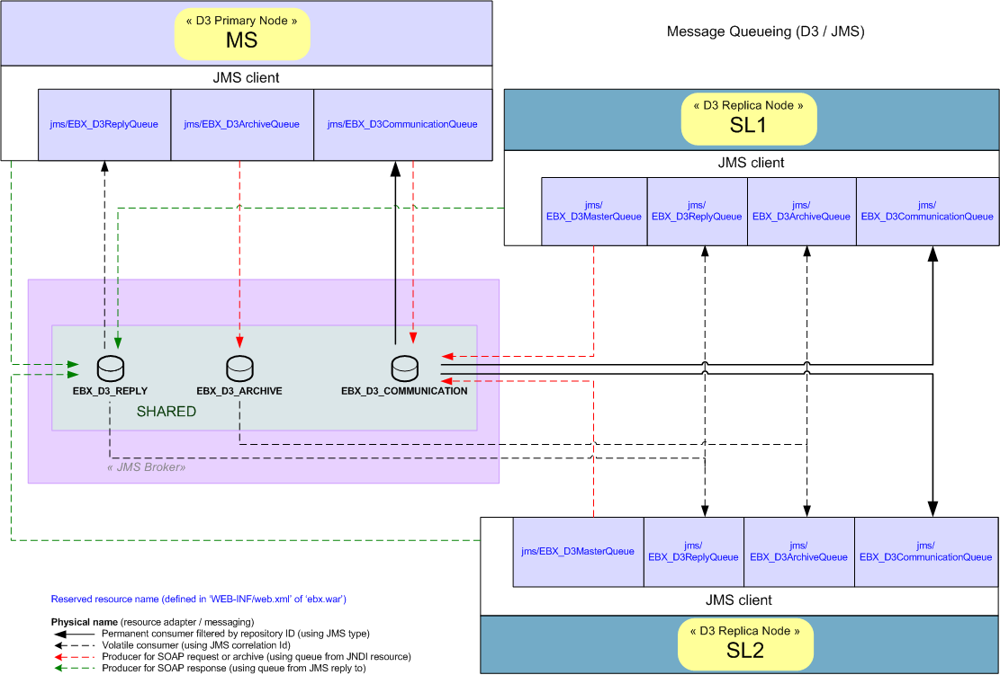
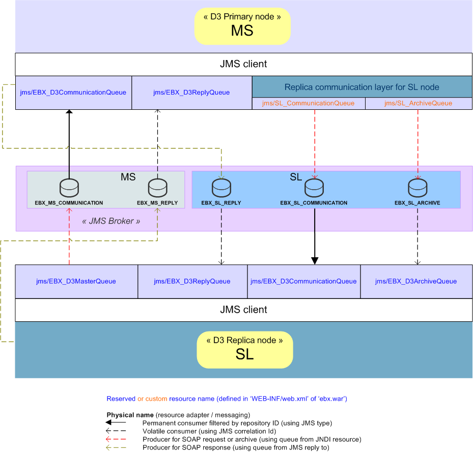
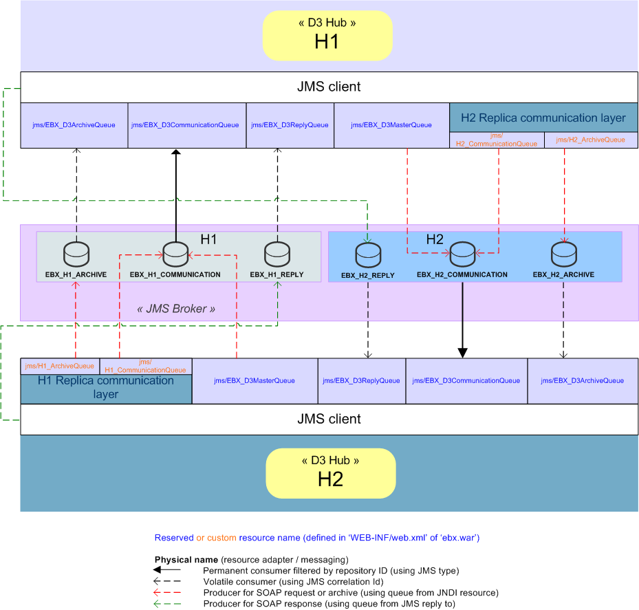

D3 JMS Configuration
JMS for distributed data delivery (D3)
To configure D3 to use JMS instead of the default HTTP and TCP protocols, you must configure the JMS connection factory and the following queues declared in the WEB-INF/web.xml deployment descriptor of the 'ebx' web application.
Note
If the TIBCO EBX® main configuration does not activate JMS and D3 ('slave', 'hub' or 'master' node) through the properties ebx.d3.mode, ebx.jms.activate and ebx.jms.d3.activate, then the environment entries below will be ignored by EBX® runtime. See JMS and Distributed data delivery (D3) in the EBX® main configuration properties for more information on these properties.
Common declarations on primary and replica nodes (for shared queues)
Reserved resource name | Default JNDI name | Description |
|---|---|---|
| Weblogic: JBoss: | D3 primary JMS queue (only for D3 mode 'slave' or 'hub'). It specifies the queue name used to send SOAP requests to the D3 primary node. The message producer sets the primary node repository ID as a value of the header field Java type: |
| Weblogic: JBoss: | D3 Reply JMS queue (for all D3 modes except the 'single' mode). It specifies the name of the reply queue for receiving SOAP responses. The consumption is filtered using the header field Java type: |
| Weblogic: JBoss: | D3 JMS Archive queue (for all D3 modes except the 'single' mode). It specifies the name of the transfer archive queue used by the D3 node. The consumption is filtered using the header field Java type: |
| WebLogic: JBoss: | D3 JMS Communication queue (for all D3 modes except 'single' mode). It specifies the name of the communication queue where the requests are received. The consumption is filtered using the header field Java type: |
Note
These JNDI names are set by default, but can be modified inside the web application archive ebx.war, included in EBXForWebLogic.ear (if using Weblogic) or in EBX.ear (if using JBoss, Websphere or other application servers).
Optional declarations on primary nodes (for replica-specific queues)
Note
Used for ascending compatibility prior to 5.5.0 or for mono-directional queues topology.
The deployment descriptor of the primary node must be manually modified by declaring specific communication and archive queues for each replica node. It consists in adding resource names in 'web.xml' inside 'ebx.war'. The replica-specific node queues can be used by one or more replica nodes.
Resources can be freely named, but the physical names of their associated queue must correspond to the definition of replica nodes for resources jms/EBX_D3ArchiveQueue and jms/EBX_D3CommunicationQueue.
Note
Physical queue names matching: on registration, the replica node sends the communication and archive physical queue names. These queues are matched by physical queue name among all resources declared on the primary node. If unmatched, the registration fails.
Examples of JMS configuration
Shared queues | Specific queues | |
|---|---|---|
Primary-Replica nodes architecture | Between a primary node and two replica nodes with shared queues | Between a primary node and a replica node with replica-specific queues |
Hub-Hub architecture |
Between a primary node and two replica nodes with shared queues

Between a primary node and a replica node with replica-specific queues

Between two hub nodes with shared queues

Between two hub nodes with replica-specific queues
